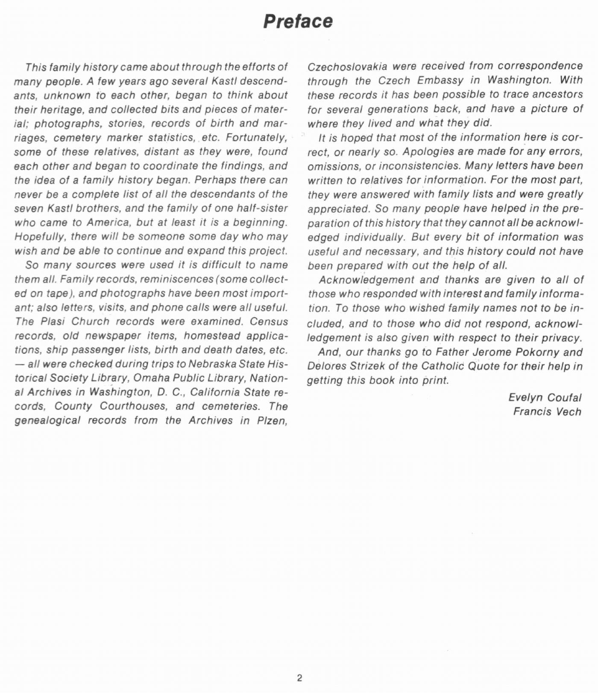

The book · Preface
Page 2 Preface


Transcription
Preface
This family history came about through the efforts of many people. A few years ago several Kastl descendants, unknown to each other, began to think about their heritage, and collected bits and pieces of material; photographs, stories, records of birth and marriages, cemetery marker statistics, etc. Fortunately, some of these relatives, distant as they were, found each other and began to coordinate the findings, and the idea of a family history began. Perhaps there can never be a complete list of all the descendants of the seven Kastl brothers, and the family of one half-sister who came to America, but at least it is a beginning. Hopefully, there will be someone some day who may wish and be able to continue and expand this project.
So many sources were used it is difficult to name them all. Family records, reminiscences (some collected on tape), and photographs have been most important; also letters, visits, and phone calls were all useful. The Plasi Church records were examined. Census records, old newspaper items, homestead applications, ship passenger lists, birth and death dates, etc. — all were checked during trips to Nebraska State Historical Society Library, Omaha Public Library, National Archives in Washington, D. C., California State records, County Courthouses, and cemeteries. The genealogical records from the Archives in Plzen, Czechoslovakia were received from correspondence through the Czech Embassy in Washington. With these records it has been possible to trace ancestors for several generations back, and have a picture of where they lived and what they did.
It is hoped that most of the information here is correct, or nearly so. Apologies are made for any errors, omissions, or inconsistencies. Many letters have been written to relatives for information. For the most part, they were answered with family lists and were greatly appreciated. So many people have helped in the preparation of this history that they cannot all be acknowledged individually. But every bit of information was useful and necessary, and this history could not have been prepared with out the help of all.
Acknowledgement and thanks are given to all of those who responded with interest and family information. To those who wished family names not to be included, and to those who did not respond, acknowlledgement [sic] is also given with respect to their privacy.
And, our thanks go to Father Jerome Pokorny and Delores Strizek of the Catholic Quote for their help in getting this book into print.
Evelyn Coufal Francis Vech
Transcriber’s notes
Entire preface is set in italic type (rendered here as plain text). Two-column layout; lower half of page blank. 'acknowl-/ledgement' is split across a line with a doubled 'l' in the print.